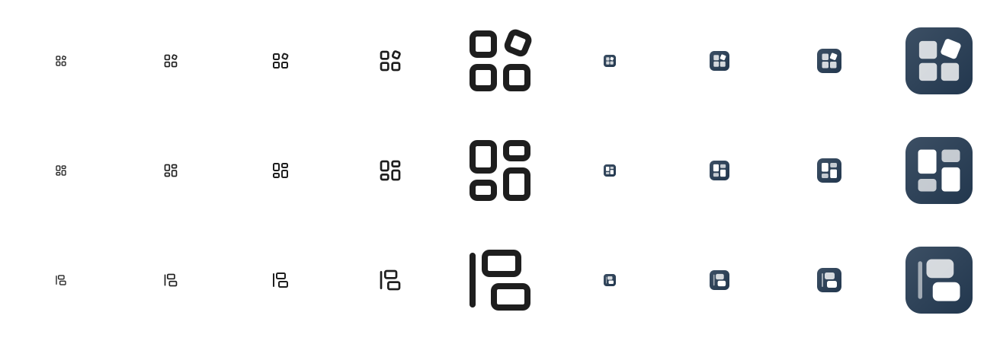
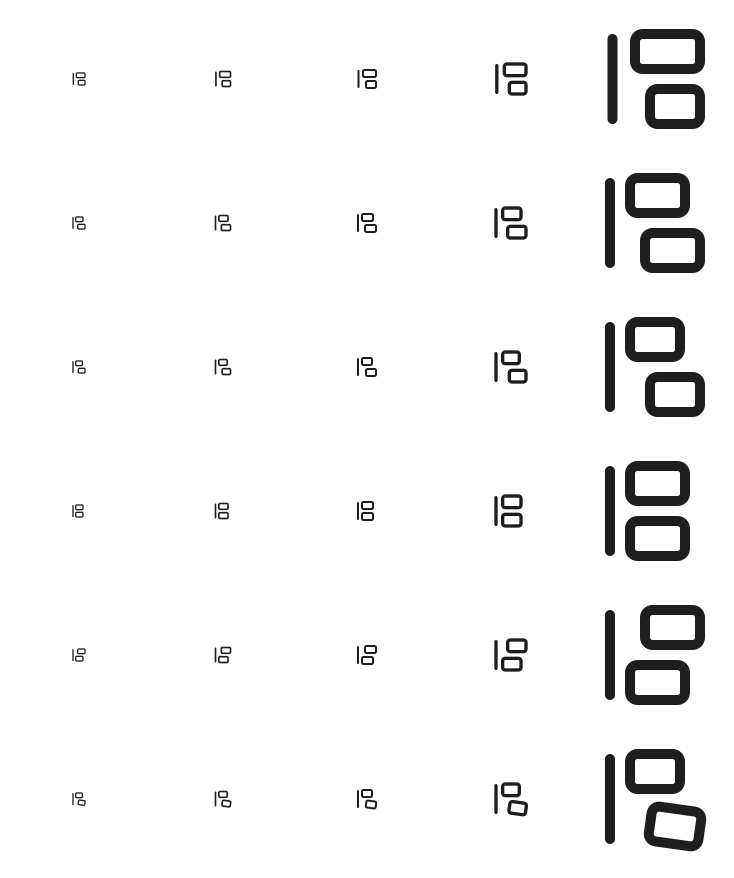
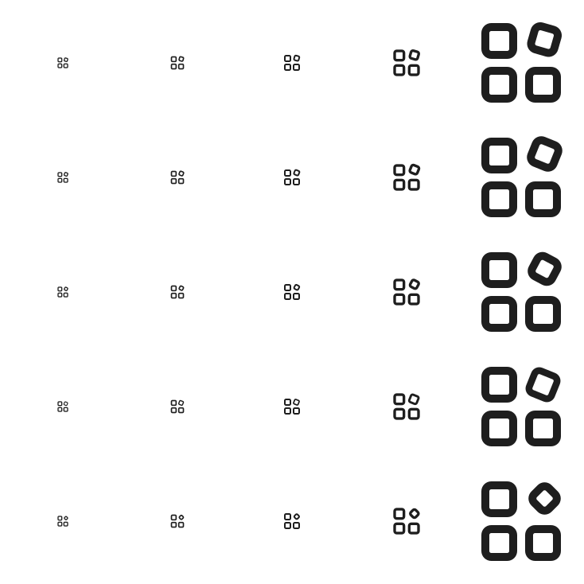

24 × 24 网格母版
虚线是 1px 安全边距。倾斜角定在 22°：栅格化实测下 16° 到了 24px 就看不出倾斜，28° 以上又从"倾斜的卡片"变成菱形。卡片缩到 6×6，是让旋转后的外框仍能留住 2px 间距的最大尺寸。
"整理"是动作和关系，不是物体，24px 画布上放不下"从乱到齐"的完整叙事。 三个方向各自借用一种成熟的图形语法来暗示它：归位（有东西正落到该在的位置）、分栏（已被分门别类的结果）、对齐（有一条基准线在约束）。 每个方向都先在 Lucide 的 24×24 网格上画单色母版（描边 2、圆头圆角、元素间距 2、圆角 2），再派生彩色版。
三张卡片已经在网格里就位，第四张倾斜着正在落下。倾斜是唯一的动态元素，也是整个图形的签名特征——它同时把"卡片"和"正在被整理"两件事说完了。
24 × 24 网格母版
虚线是 1px 安全边距。倾斜角定在 22°：栅格化实测下 16° 到了 24px 就看不出倾斜，28° 以上又从"倾斜的卡片"变成菱形。卡片缩到 6×6，是让旋转后的外框仍能留住 2px 间距的最大尺寸。
实际尺寸（单色）
Obsidian 语境
网站彩色版
两列高矮交错的卡片，画的是"整理完之后的样子"。最像一个卡片工作台，也最稳，但它是静态结果，没有动作感——而且和 Lucide 的 kanban / layout-dashboard 距离最近，需要靠高矮交错来拉开辨识度。
24 × 24 网格母版
四张卡片全部落在 7 宽的两列上，列间距和行间距都是 2px，高度做 9 / 5 的交错以避开通用看板图标。
实际尺寸（单色）
Obsidian 语境
网站彩色版
左侧一条基准线，两张等大的卡片正在往它身上靠——下面那张还错着位没到位。"整理"的语义最直白，形状也最少（三个元素），16px 下最清晰。需要留意的一点：那条竖线容易被读成侧边栏，和 Lucide 的 panel-left 有一定距离感需要把控，卡片的圆角和错位是主要的区分手段。
24 × 24 网格母版
两张卡片严格等大（11×7），错位只靠平移、不靠改尺寸——改尺寸会被读成"两张不同的卡片"，只有等大平移才读得出"同一张卡片没放到位"。等大之后 13 宽会越界，所以收到 11 宽、基准线从 3.5 挪到 3，右移 3 格后第二张的外边缘正好落在 22。
实际尺寸（单色）
Obsidian 语境
网站彩色版
Starlight 顶栏的 logo 高度只有 28px 上下，是彩色版最严苛的场合——比 hero 大图更能决定选哪个方向。
浏览器会给 SVG 做抗锯齿，看着总比实际清楚。这两张是用 sharp 真正栅格化成位图的结果——倾斜角定在 22° 就是照着下面那张定的。
三方向 · 单色 16/20/24/32/96 + 彩色 16/26/32/88

C 的卡片尺寸研究 · 定稿依据

从上到下：不等宽（旧稿）被读成两张不同的卡片，是层级关系不是错位；等大平移 3（定稿）读作同一张卡片没到位；等大平移 4 错位更明显但略显随意；完全对齐最干净却没有动作；错位放在上面那张、以及给下面那张加 8° 倾斜，小尺寸下都像是画歪了。
A 的倾斜角研究 · 备选方向留档

从上到下：16° 到 24px 就看不出倾斜，退化成 layout-grid；28° 开始像菱形；45° 彻底不是卡片了。22° 是唯一在 24px 能看出倾斜、在 96px 仍是一张卡片的角度。
方案 C（等大平移 3）已定稿并落地。addIcon() 要求内容适配 0 0 100 100 视口、且不带 <svg> 外壳，所以 24 网格母版套一层 scale(100/24) 交付，描边宽度随之放大到 8.33，不用手工重画：
addIcon('card-workspace', `
<g transform="scale(4.16667)" fill="none" stroke="currentColor"
stroke-width="2" stroke-linecap="round" stroke-linejoin="round">
<path d="M3 4v16"/>
<rect x="7" y="3" width="11" height="7" rx="1.5"/>
<rect x="10" y="14" width="11" height="7" rx="1.5"/>
</g>
`);
prefers-color-scheme 规则，跟随浏览器明暗翻转og:image / twitter:imageaddIcon() 注册代码配色以 V2 设计稿（tokens-v2.css）为准，不是当前 theme.css 的品牌蓝。V2 的强调色明度在明暗之间翻转——浅色下是深石墨蓝 oklch(0.42 0.042 252) = #3c4f64，深色下却是浅蓝 oklch(0.79 0.055 250) = #a0bedd——所以主图形必须做成两个文件，接到 Starlight 的 logo: { light, dark }。所有色值都由 oklch 精确换算，未凭肉眼取色。
主 logo 和 favicon 是两套略有差异的几何——这是刻意的光学调整，不是疏漏。主 logo 保留 0.8 / 1.0 的透明度差来营造层次，favicon 在 16px 下那点层次只会变成脏点，所以拉满对比。改动时两个文件都要同步。